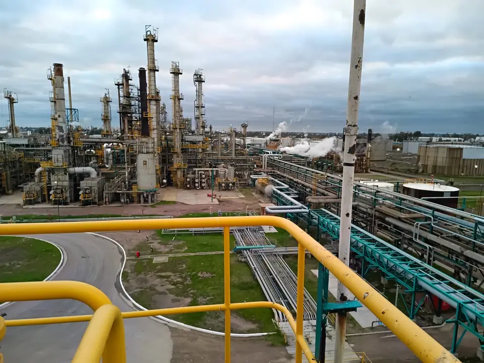

Servicios para la integridad y la seguridad de sus instalaciones
Cuatro líneas de trabajo para la industria del oil & gas, la energía y la minería: del relevamiento en planta a la certificación final.
Inspecciones técnicas
Res. 277/25 · API 653Verificación del estado de integridad de tanques aéreos de almacenamiento de hidrocarburos según la Res. 277/25 y la norma API 653. Aplicamos distintos ensayos no destructivos para determinar el estado del activo y garantizar su condición técnica según la normativa.

Auditorías de seguridad
Res. 404/94 · Res. 1102/04Verificación de funcionamiento y seguridad de instalaciones inscriptas en el Registro de la Secretaría de Energía (categorías A1 a C3, Res. 404/94) y habilitación e inscripción en el Registro de Bocas de Expendio (Res. 1102/04): evaluación del proyecto de obra, verificación de condiciones de seguridad y asesoramiento en el proceso de alta.

Rehabilitación de equipos almacenadores de GLP
Certificación ante la Secretaría de EnergíaProceso completo de rehabilitación decenal de esferas, tanques y otros equipos de la industria del gas licuado de petróleo: ensayos, inspecciones y pruebas requeridas, y certificación final ante la Secretaría de Energía.
- Inspección visual externa e interna
- Ensayos no destructivos: UT, PM, LP, AE y PAUT
- Prueba hidráulica, informe y certificación

Ensayos no destructivos
Herramientas de diagnóstico para estudiar y evaluar materiales, equipos y soldaduras sin producir daños irreversibles, detectar discontinuidades y actuar sobre ellas. Prevención para asegurar calidad, seguridad y mantenimiento.

Beneficios de nuestros servicios
Seguridad industrial
Prevención de accidentes e incidentes.
Mantenimiento optimizado
Mayor vida útil de los activos.
Menos paradas imprevistas
Reducción de paradas no planificadas y de los costos asociados.
¿No sabe qué servicio necesita?
Cuéntenos su caso y le indicamos el alcance adecuado.